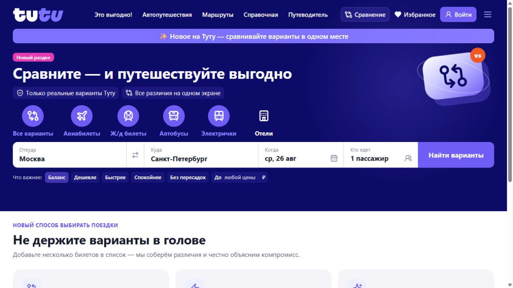
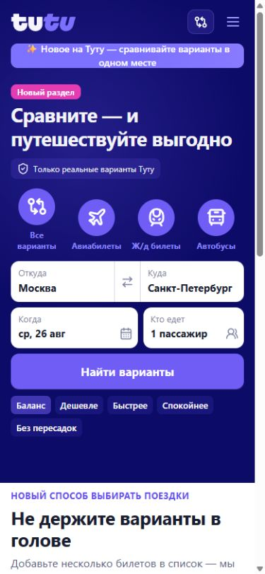

Зачем это нужно
Все значимые различия — на одном экране
Самый дешёвый билет может оказаться ночным и без багажа, а отель с высокой оценкой — находиться далеко от центра. «Туту Сравнение» сопоставляет реальные характеристики предложений, называет преимущества и честно показывает главный компромисс.
Неизвестные параметры не заменяются догадками или средними значениями.
Рекомендация связана с ценой, временем, качеством и условиями карточек.
Баланс, цена, скорость, спокойствие, комфорт или гибкие условия.
Финальная цена и наличие подтверждаются в оригинальном предложении.

Карта сценария
Один понятный путь от запроса до покупки
Каждый этап имеет конкретный результат. Можно вернуться назад, изменить shortlist или приоритет — повторно вводить исходные данные не потребуется.
Быстрый старт
От поиска до выбора за четыре шага
Выберите транспорт или отели, направление, даты и путешественников.
Нажмите «Сравнить» на карточках, которые подходят по базовым условиям.
Алгоритм моментально пересчитает выбор без повторного поиска.
Изучите преимущества и компромисс, затем откройте предложение на Туту.
Билеты и транспорт
Сравнение разных способов добраться
- Укажите пункты отправления и назначения, дату и пассажиров.
- Выберите самолёты, поезда, автобусы, электрички или все варианты.
- Добавьте интересные карточки кнопкой «Сравнить».
- Откройте «Сравнение» в верхнем меню и выберите цель.
| Приоритет | Когда использовать |
|---|---|
| Баланс | Нужен вариант без выраженного проигрыша по цене, времени и спокойствию. |
| Дешевле | Бюджет важнее продолжительности и дополнительных неудобств. |
| Быстрее | Главное — минимальное время в пути. |
| Спокойнее | Важны отсутствие пересадок, сложных билетов и ночных часов. |
Карточка показывает только доступные для предложения факты: цену, расписание, длительность, пересадки, багаж, условия тарифа и рейтинг. Повторное нажатие «Сравнить» удаляет карточку из shortlist.
Отели и жильё
Фильтры сначала, глубокое сравнение потом
Укажите город, даты и гостей. Фильтры применяются сразу, без кнопки подтверждения: тип размещения, цена, звёзды, оценка, расположение, питание, отмена, оплата при заселении и удобства.
| Приоритет | Что получает больший вес |
|---|---|
| Баланс | Цена, качество, расположение и условия без критического провала. |
| Дешевле | Итоговая стоимость и цена за ночь. |
| Комфорт | Оценка, надёжность отзывов, категория и удобства. |
| Ближе к центру | Расстояние до центра и ближайшего метро. |
| Гибкие условия | Бесплатная отмена и оплата при заселении. |
Объяснимый выбор
Как читать рекомендацию
Лидер именно при текущем приоритете и выбранном наборе.
Относительная оценка внутри сравнения, а не универсальный рейтинг.
Измеримые факты, которые дали варианту преимущество.
Самая важная уступка лучшей альтернативе, если она существует.
Таблица различий
Зелёная подсветка отмечает лучшее доступное значение строки. Режим «Только различия» скрывает одинаковые характеристики. Знак «—» означает, что источник не вернул параметр: сервис не выдумывает его и снижает уверенность результата.
Завершение выбора
Финальная проверка выполняется на Туту
Кнопка выбора создаёт ссылку на исходное предложение. Перед оплатой ещё раз проверьте актуальную цену, наличие, путешественников, правила возврата или отмены, багаж, питание и остальные условия тарифа.
«Туту Сравнение» не принимает оплату, не хранит платёжные данные и не дублирует выбор места, тарифа или номера.
Проверьте перед оплатой
- совпадают даты, маршрут и состав путешественников;
- цена и наличие не изменились;
- устраивают правила возврата или отмены;
- нужные багаж, питание и другие условия включены в тариф.
На телефоне
Полный сценарий без урезанных функций
- форма поиска перестраивается под узкий экран;
- фильтры отелей открываются компактной панелью;
- варианты сравнения листаются жестом или стрелками;
- ключевые действия остаются доступны без переполнения страницы.

Термины интерфейса
Что означает каждый элемент сравнения
| Термин | Значение |
|---|---|
| Shortlist | Выбранные вами варианты для подробного сопоставления. |
| Приоритет | Цель выбора, меняющая веса критериев, но не исходные факты. |
| Индекс | Относительная оценка варианта внутри текущего набора. |
| Главный компромисс | Наиболее важная уступка лучшей альтернативе. |
| «—» | Источник не вернул параметр; значение не было придумано. |
Помощь
Частые вопросы
Почему часть источников временно недоступна?
Независимый источник транспорта может временно не ответить. Остальные реальные варианты продолжают отображаться; тестовыми карточками источник не заменяется.
Почему первый поиск иногда дольше?
Первый запрос может включать DNS и установление защищённого соединения. Сервер заранее прогревает канал, а успешные ответы кратковременно кэшируются, поэтому последующие запросы обычно быстрее.
Почему цена после перехода изменилась?
Цены и наличие динамичны. Финальный экран Туту является источником истины непосредственно перед покупкой.
Что делать, если переход не открылся?
Разрешите открытие новой вкладки для сайта и повторите действие. Если предложение закончилось, выполните новый поиск.
Используется ли генеративная модель для выбора?
Нет. Входные данные структурированы, поэтому рекомендация рассчитывается быстрыми проверяемыми правилами. Они не придумывают отсутствующие условия и дают воспроизводимый результат.